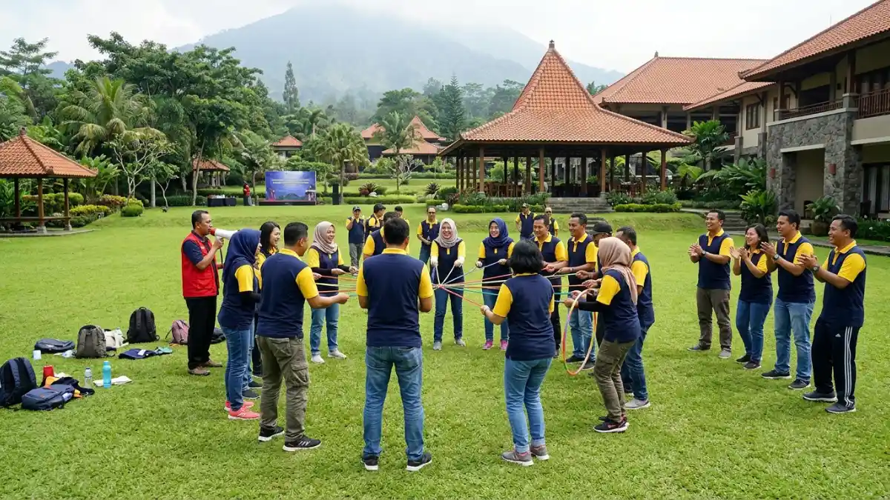

Hotel di kawasan Tretes yang menyediakan area outbound dan ruang pertemuan, cocok untuk gathering rombongan dan kegiatan team building.
Hotel di kawasan Tretes yang menyediakan area outbound dan ruang pertemuan, cocok untuk gathering rombongan dan kegiatan team building.
Hotel outbound di Tretes adalah penginapan yang menyediakan atau mengatur kegiatan outbound, termasuk Royal Senyiur Hotel dan Royal Hotel and Outbound Trawas di kawasan sekitar.
- Tiket.com mencatat 34 sampai 37 hotel di Tretes pada pencarian tanggal Juli sampai September 2026.
- Royal Senyiur Hotel dan Royal Hotel and Outbound Trawas tercantum terkait kegiatan outbound.
- Paket hotel menggabungkan kamar, konsumsi, ruang rapat, dan kegiatan dalam satu koordinasi.
- Konfirmasi kapasitas, wahana, dan fasilitator tertulis sebelum memesan.
- Apa Keuntungan Menginap di Hotel dengan Program Outbound?
- Hotel Apa Saja di Kawasan Tretes yang Terkait Program Outbound?
- Berapa Banyak Pilihan Hotel di Tretes?
- Apa yang Perlu Dikonfirmasi Sebelum Memesan Paket Hotel dan Outbound?
- Bagaimana Alur Menginap Satu Malam dengan Kegiatan Outbound?
- Kapan Hotel Lebih Cocok Dibanding Taman Petualangan?
- Apa Kesalahan Umum Saat Memilih Hotel Outbound di Tretes?
- Kesimpulan
Apa Keuntungan Menginap di Hotel dengan Program Outbound?
Hotel dengan program outbound memudahkan rombongan karena kamar, konsumsi, ruang pertemuan, dan kegiatan luar ruang dapat dikoordinasikan melalui satu pihak, sehingga logistik lebih sederhana.
Rombongan yang memakai penyelenggara terpisah harus mengatur transportasi antar lokasi, jadwal makan, dan penginapan sendiri.
Pada paket hotel, koordinasi lebih ringkas karena peserta tidak perlu berpindah jauh antara kamar, ruang rapat, dan area kegiatan.
Keuntungan lain adalah fleksibilitas jadwal. Kegiatan pagi dapat dilanjutkan dengan sesi rapat siang, lalu istirahat di kamar.
Untuk kegiatan yang berlangsung dua hari satu malam, peserta juga lebih segar karena tidak perlu menempuh perjalanan pulang pada hari yang sama.
Hotel Apa Saja di Kawasan Tretes yang Terkait Program Outbound?
Hotel yang terkait outbound di kawasan Tretes dan Trawas antara lain Royal Senyiur Hotel dan Royal Hotel and Outbound Trawas, sedangkan hotel lain dapat dikonfirmasi langsung.
Tiket.com mencantumkan Royal Senyiur Hotel di Prigen dengan keterangan bahwa tamu dapat mengatur kegiatan outbound untuk pelatihan team building. Hotel tersebut berjarak sekitar dua menit berjalan kaki dari Air Terjun Putuk Truno.
Properti lain di daftar yang sama, Royal Hotel and Outbound Trawas, memuat kata outbound dalam namanya dan menyediakan area karavan dengan fasilitas barbeku.
Hotel lain di kawasan ini memiliki karakter berbeda. Royal Tretes View Convention Hotel berlokasi di Jalan Gajah Mada, Tretes, dan dikategorikan sebagai hotel bintang tiga dengan fasilitas konvensi.
Surya Hotel and Cottage Prigen menawarkan pemandangan Gunung Penanggungan, kolam renang, pusat kebugaran, dan sauna.
Kedua properti ini lebih relevan untuk kebutuhan rapat dan menginap, sehingga rombongan perlu menanyakan apakah program outbound dapat diatur bersama mitra penyelenggara.

Suasana gathering rombongan di area hotel kawasan Prigen dengan latar pemandangan pegunungan hijau, ideal untuk kegiatan outbound dan team building.Berapa Banyak Pilihan Hotel di Tretes?
Tiket.com mencatat 34 sampai 37 hotel di Tretes pada pencarian untuk tanggal Juli sampai September 2026, dengan jumlah yang berubah mengikuti tanggal dan ketersediaan kamar.
Angka tersebut diambil dari halaman daftar hotel Tretes di Tiket.com untuk beberapa tanggal pencarian pada 2026, yakni 36 hotel untuk 18 sampai 19 Juli, 34 hotel untuk 29 sampai 30 Juli, dan 37 hotel untuk 1 sampai 2 September. Perbedaan jumlah muncul karena sebagian hotel penuh pada tanggal tertentu.
Banyaknya pilihan memberi ruang untuk membandingkan harga dan fasilitas. Namun, tidak semua hotel menyediakan program outbound sendiri.
Karena itu, saring daftar berdasarkan kebutuhan: kapasitas kamar, ruang pertemuan, area terbuka, dan kesediaan hotel bekerja sama dengan penyelenggara kegiatan.
Apa yang Perlu Dikonfirmasi Sebelum Memesan Paket Hotel dan Outbound?
Konfirmasikan kapasitas kamar dan ruang, jenis wahana atau permainan, jumlah fasilitator, standar keselamatan, konsumsi, dan kebijakan pembatalan secara tertulis sebelum membayar uang muka paket hotel dan outbound.
Gunakan daftar periksa berikut saat berdiskusi dengan pihak hotel:
- Kapasitas: jumlah kamar, kapasitas ruang rapat, dan batas peserta untuk setiap kegiatan.
- Jenis kegiatan: apakah tersedia wahana ketinggian, permainan kelompok, atau keduanya.
- Fasilitator: siapa yang memandu, berapa jumlahnya, dan bagaimana pengalaman mereka menangani rombongan.
- Keselamatan: peralatan pengaman, briefing, prosedur darurat, dan akses layanan kesehatan terdekat.
- Konsumsi: menu, jadwal makan, dan opsi untuk peserta dengan pantangan tertentu.
- Biaya dan pembatalan: rincian harga, uang muka, pelunasan, serta aturan perubahan jumlah peserta.
- Rencana hujan: alternatif kegiatan di dalam ruangan.
Simpan seluruh kesepakatan dalam dokumen tertulis. Untuk gambaran komponen biaya yang perlu ditanyakan, baca harga outbound di Tretes dan komponen biayanya.
Bagaimana Alur Menginap Satu Malam dengan Kegiatan Outbound?
Alur umum menginap satu malam adalah tiba dan check-in siang, sesi rapat atau permainan sore, makan malam, istirahat, kegiatan outbound pagi, lalu check-out dan kembali.
Contoh alur ini bersifat umum dan perlu disesuaikan dengan kebijakan hotel. Rombongan biasanya tiba menjelang siang, makan siang, lalu mengikuti sesi pembukaan atau rapat.
Sore hari dapat diisi permainan kelompok ringan di area terbuka. Malam hari cocok untuk makan bersama dan sesi santai.
Kegiatan fisik utama lebih baik dijadwalkan pagi hari, saat energi peserta masih penuh dan cuaca pegunungan umumnya lebih cerah.
Setelah sesi selesai, beri waktu membersihkan diri sebelum check-out. Sisakan jeda perjalanan pulang, terutama bila rombongan menuju Surabaya, Malang, atau kota lain yang berjarak sekitar satu hingga dua jam dari Tretes.
Kapan Hotel Lebih Cocok Dibanding Taman Petualangan?
Hotel lebih cocok bila rombongan membutuhkan penginapan, ruang rapat, dan kegiatan dalam satu paket, sedangkan taman petualangan lebih cocok untuk kunjungan singkat yang berfokus pada wahana.
| Kebutuhan | Pilihan yang Lebih Sesuai |
|---|---|
| Gathering dua hari satu malam | Hotel dengan program outbound |
| Rapat sekaligus kegiatan luar ruang | Hotel dengan ruang pertemuan |
| Kunjungan satu hari fokus wahana | Taman petualangan |
| Keluarga dengan anak kecil | Taman petualangan dengan tarif anak |
Kedua opsi dapat digabung. Rombongan dapat menginap di hotel, lalu mengunjungi taman petualangan pada pagi hari. Pelajari opsi taman petualangan di panduan tempat outbound di Tretes.
Apa Kesalahan Umum Saat Memilih Hotel Outbound di Tretes?
Kesalahan umum adalah menganggap semua hotel menyediakan outbound, tidak memeriksa kapasitas, memesan terlalu mepet, dan tidak menanyakan kebijakan hujan serta pembatalan.
Banyak calon tamu mengira hotel di Tretes otomatis memiliki wahana. Padahal beberapa hotel hanya menyediakan kamar dan ruang rapat, sedangkan kegiatan luar ruang dikerjakan mitra. Tanyakan hal ini sejak awal.
Pemesanan yang terlalu mepet juga berisiko. Pada akhir pekan dan musim liburan, sebagian hotel penuh, sehingga pilihan menyempit.
Terakhir, pastikan aturan perubahan jadwal akibat cuaca tertulis jelas. Untuk rancangan kegiatan tim, baca outbound team building di Tretes untuk kantor.
Kesimpulan
Hotel outbound di Tretes memudahkan rombongan karena penginapan, ruang rapat, dan kegiatan dapat dikoordinasikan bersama.
Mulailah dari daftar kebutuhan, saring hotel berdasarkan kapasitas dan program, lalu konfirmasi kapasitas, keselamatan, biaya, dan kebijakan hujan secara tertulis sebelum membayar uang muka.
FAQ